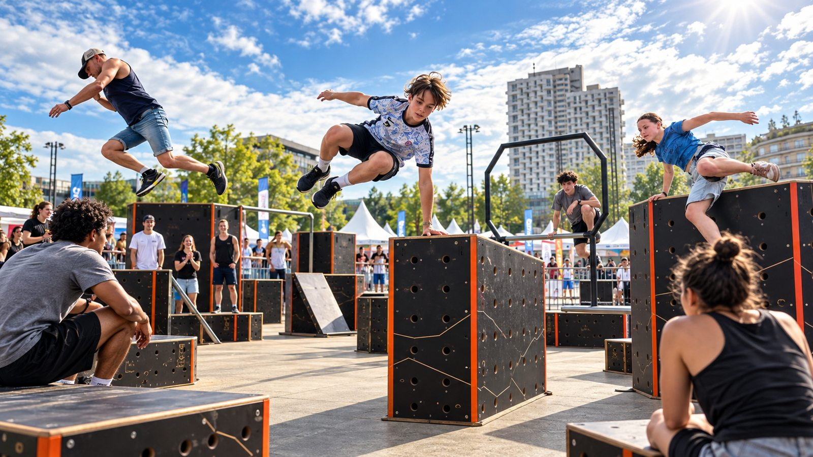

01
DÉCOUVRIR
Faire ses premiers pas dans une compétition de Parkour, sans devoir s'engager dans un championnat.
Un rendez-vous pour celles et ceux qui aiment le Parkour, avec ou sans licence FFGym. Des occasions de se retrouver, d'essayer la compétition et de faire vivre la pratique ensemble.

Les Opens ont une ambition simple : rassembler autour de la pratique du Parkour. Que l'on découvre les compétitions ou que l'on ait déjà de l'expérience, l'idée est de partager un moment sportif, de rencontrer d'autres traceurs et de se lancer de nouveaux défis, dans un cadre organisé.
Faire ses premiers pas dans une compétition de Parkour, sans devoir s'engager dans un championnat.
Favoriser les rencontres entre les pratiquants, les clubs et les passionnés de toute la Bretagne.
Se mesurer à un parcours, montrer ses mouvements et profiter de l'énergie collective de l'événement.
Aucune exclusivité de licence : les Opens sont également accessibles aux traceurs qui ne sont pas licenciés à la FFGym. Ils ne servent pas à gagner des points pour le classement du circuit fédéral et chaque Open est indépendant des autres.
Relier le départ à l’arrivée le plus rapidement possible en respectant les points de passage obligatoires. Deux passages possibles, dont le second est facultatif : le meilleur temps est retenu.
Dès 10 ans · Pénalité de 10 secondes par point de passage manqué.Composer un run libre, sans durée imposée. Les juges évaluent les tricks, la variété des mouvements, la fluidité, la sécurité et l’impact de la prestation sur le public.
Dès 12 ans · Les cinq tricks les plus valorisés comptent en difficulté.Deux épreuves, deux façons de relever le défi. Les Opens appliquent leurs propres règles, distinctes de celles des compétitions fédérales FFGym.
L'expression, la technique et le spectacle
Un run Freestyle est apprécié dans toutes ses dimensions : la qualité des enchaînements, la diversité des mouvements, la maîtrise technique et l'énergie transmise au public. Quatre repères simples permettent d'en comprendre l'esprit :
Le rythme des enchaînements et la continuité du run.
La diversité des mouvements, des obstacles et des supports utilisés.
Le contrôle des mouvements, la précision et l'attention portée à la sécurité.
L'originalité des choix et la capacité à proposer une prestation expressive.
Le règlement détaille le barème : difficulté, diversification, fluidité, sécurité et show. La grille de difficulté des tricks figure en annexe du PDF.
Le chrono décide
Relier le départ à l'arrivée le plus vite possible, en passant par les points obligatoires. Deux essais possibles, le second facultatif : le meilleur temps est retenu.
Découverte du terrain : après l'échauffement articulaire, 30 minutes sont prévues pour découvrir le FoP et préparer son passage.
Catégories : en Freestyle, 12–15 ans et 16 ans et plus ; en Speedrun, 10–11 ans (catégorie à l'essai), 12–15 ans et 16 ans et plus. Chaque classe d'âge comporte un classement Femmes et un classement Hommes.
Critères du Freestyle, chronométrage du Speedrun, catégories, pénalités et grilles de difficulté : retrouvez toutes les règles dans le document régional.
Consulter le règlement complet (PDF) ↗